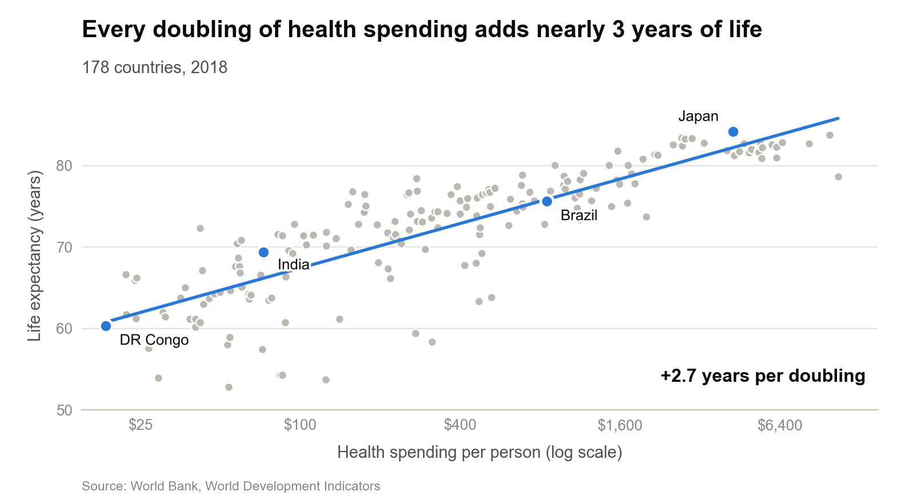
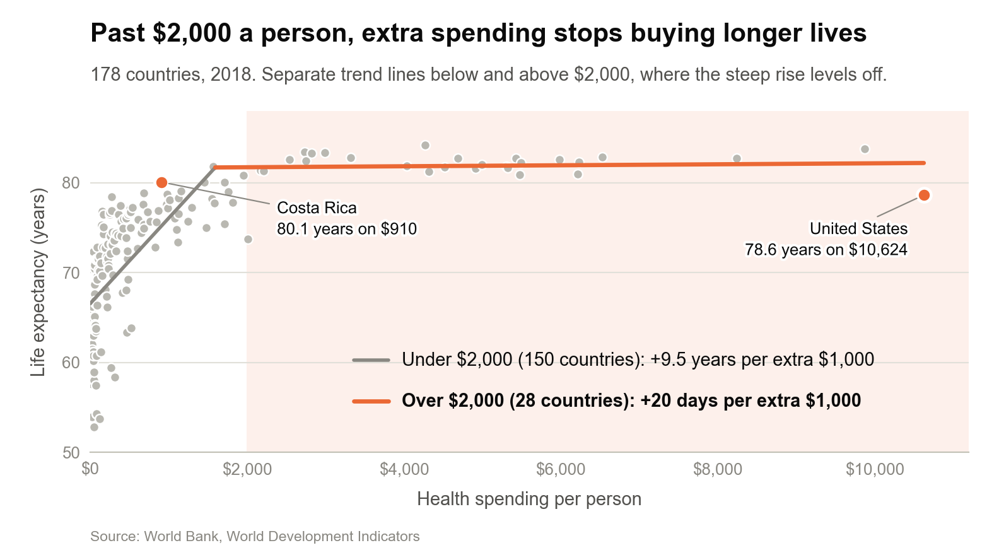

Proposition: Spending more on health care leads to longer lives.
Data. World Bank Human Development Indicators (health
category): current health expenditure per person in US dollars
(SH.XPD.CHEX.PC.CD) and life expectancy at birth
(SP.DYN.LE00.IN). We use 2018, the latest year with spending
data, and keep the 178 countries that report both values. Regional and
income-group aggregates are removed. Both figures below are drawn from
exactly the same 178 rows.
Each design decision is scored from −2 (fully deceptive) to +2 (fully earnest).
FOR the Proposition

Design Decisions and Rationale:
- +0.5 A log₂ spending axis with a straight fitted line. Spending runs from $19 (DR Congo) to $10,624 (United States), a 570-fold range, so a log axis is the textbook choice and we label it "(log scale)". It also does the persuading: the curve becomes one steady staircase with no ceiling, which is the shape of our claim. What the axis hides is cost. A doubling is $25 at the left edge and $5,000 at the right, so equal-looking steps get 200 times more expensive. A single straight line also implies the same return everywhere, although the countries above $2,000 gain only 0.5 years per doubling (r = 0.17). The alternative, a linear axis, makes the rich countries look like a plateau, which is Figure 2's argument.
- −1.5 A causal headline: spending "adds" years. The data are one year of cross-country snapshots, so they show an association. Richer countries also have better food, water, sanitation and schooling, and health spending partly stands in for national income, which the chart never mentions. "Adds" reads like a rate of return and gives the reader a number to remember ("nearly 3 years"). We considered "is linked to," which is accurate but much weaker. Kong et al. found that a slanted title shapes what readers recall even when the chart is the same, and that is why we kept the verb. The figure caption on this page uses the accurate wording.
- −1 Which countries get a name. We label four countries spread along the line: DR Congo, India, Brazil and Japan. All four sit on the line or above it, so the labels act like a guided tour that confirms the line. The United States is the largest miss of any country spending over $4,000 (7.2 years below the line), and we leave it as an unlabeled gray dot at the far right. Naming it would hand the reader the obvious counterexample. Labeling the U.S. was the alternative, but we expected it to become the story of the chart.
- +2 All 178 countries, a shared y-axis, and the source. Every country is drawn, including the wide spread among the poorest (life expectancy from 53 to 73 years below $100 a person). The y-axis runs from 50 to 88 years, the same as Figure 2, so the two charts can be compared directly. Starting above zero is standard for dot positions and does not stretch any gap. Year, country count and source are printed on the chart. Showing the scatter costs some tidiness, but it is what makes the line believable.
AGAINST the Proposition

Design Decisions and Rationale:
- −1 A linear dollar axis. Dollars are the unit that budgets are paid in, so a linear axis looks like the plain, honest default, and an extra $1,000 means the same thing everywhere on it. But it squeezes 150 of the 178 countries (84%) into the left 18% of the plot, where the steep climb becomes a short smear. The right side, where 28 rich countries spread over $8,000, becomes a wide, flat plain. These are the same points as Figure 1. We kept the axis unlabeled as "linear" because readers assume it.
- −2 The $2,000 breakpoint was chosen after looking. Among countries above $1,000 the correlation is 0.55; above $1,500 it is 0.35; above $2,000 it is 0.06; above $3,000 it turns negative (−0.26, but only 20 countries). We picked $2,000 because it is the round number where the link disappears, and the subtitle presents it as the place "where the steep rise levels off," as if the data had chosen it. We did not test whether a break exists at all. The honest alternative is a smooth curve (e.g., LOESS), which bends gradually and shows no clean threshold.
- −1 A joined "hockey stick" and where the color goes. The two fitted lines are drawn to meet where they cross (about $1,600) instead of as two separate segments, so the break looks like one natural curve. The rising line is muted gray, while the flat line gets the bold orange and the shaded background, so the eye lands on "flat." Orange is a warm, warning-style color that fits a "money is being wasted" reading. Drawn as two separate segments, the rising line would end above the flat one, a visible jump at $2,000 that invites questions about the cut.
- −1 Annotations: "+20 days" and a hand-picked contrast. The key reports the low group in years (+9.5 years per $1,000) and the high group in days (+20 days per $1,000), so the second number looks trivial next to the first. That slope leans on one country: without the U.S. it is +104 days. We then annotate the U.S. (78.6 years on $10,624) next to Costa Rica (80.1 years on $910). Costa Rica is the only country in the data that reaches 80 years on under $1,000, so it is the most flattering comparison available, not a typical one.
- +1.5 Nothing removed, same frame as Figure 1. All 178 countries are plotted on the same 50 to 88 year axis as Figure 1, the slopes and country counts are printed in the key, and the source is on the chart. We also drafted a "top 15 spenders" version that dropped the other 163 countries. It was more dramatic, but a careful reader would ask what was left out, so keeping everything made the flat line harder to dismiss.
Final Reflection
We drafted four charts for the checkpoint and kept the two that share the same 178 dots. Nothing in the data changes between Figure 1 and Figure 2. What changes is the x-axis scale, which line we fit, which countries get a name, and a few verbs. The "for" side was easy, almost too easy: on a log axis the correlation is 0.84 and the chart argues for itself, so our main work was making the title promise more than the data can. The "against" side was hard, because the overall pattern is against it. We had to look for a range where the link disappears, and every route there (a top-15 cut, a breakpoint, a linear axis) meant choosing a subset or scale because of the answer it gave. What surprised us most was how much rested on one country. The U.S. alone moves Figure 2's headline slope from +104 days to +20 days per $1,000, and leaving it unlabeled is a big part of why Figure 1 looks so clean. It also surprised us that the most persuasive choices looked the most routine. Nobody questions a log axis or a round-number threshold, which is exactly why they work.
Before this project we thought of ethical visualization as "don't lie with the data." Both of our figures pass that test and still reach opposite conclusions, so that definition is not enough. We now think of ethical analysis and visualization as making choices that you would be willing to disclose and defend, and that leave readers able to reconstruct the other side from what is on the page. Figure 1 partly does this: every dot is there and the scale is labeled, so a careful reader can see the U.S. sitting low. Figure 2 does it less well. The breakpoint and the unit switch to days are invisible unless you already know to ask. The honest summary is somewhere between our two charts: spending and life expectancy are strongly related across the world, the return per extra dollar shrinks quickly, and none of this shows that spending is the cause.
We do not think the line between acceptable and misleading can be drawn by technique, because the same technique can be either. A log axis is honest for data that span 570-fold and misleading if it hides that costs explode. Instead, we ended up with three questions. First, is the choice made because it fits the data and the question, or because it produces the answer we want? Our breakpoint fails this; the log axis mostly passes. Second, does the claim survive small, reasonable changes, such as dropping one country or moving a threshold by $500? The interactive chart above shows that Figure 1's slope barely moves without the U.S. (2.73 to 2.77 years per doubling), while Figure 2's "+20 days" becomes +104 days without the U.S., +128 days with the cut at $1,500, and −79 days with the cut at $2,500. Third, does the language match the evidence? Both of our titles fail here, since a causal verb needs more than one year of correlations. A chart that passes all three can still be persuasive. It just persuades with the data instead of around it.